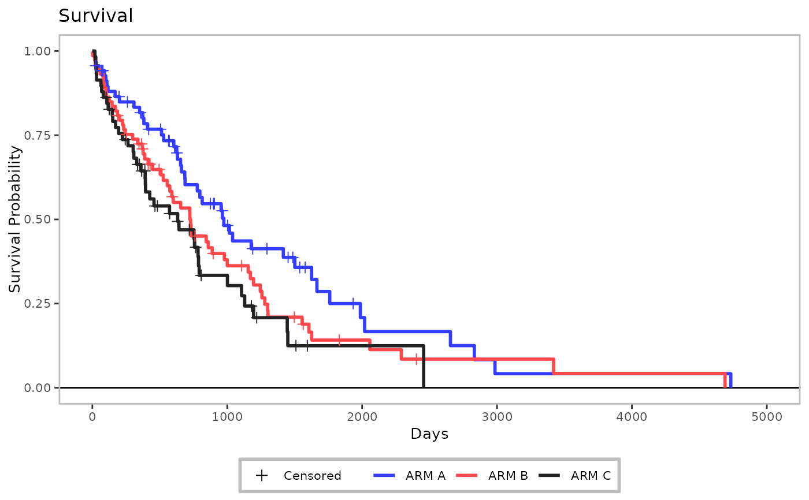

![[Deprecated]](figures/lifecycle-deprecated.svg)
Draw the Kaplan-Meier plot using ggplot2.
Usage
h_ggkm(
data,
xticks = NULL,
yval = "Survival",
censor_show,
xlab,
ylab,
ylim = NULL,
title,
footnotes = NULL,
max_time = NULL,
lwd = 1,
lty = NULL,
pch = 3,
size = 2,
col = NULL,
ci_ribbon = FALSE,
ggtheme = nestcolor::theme_nest()
)Arguments
- data
(
data.frame)
survival data as pre-processed byh_data_plot.- xticks
(
numericorNULL)
numeric vector of tick positions or a single number with spacing between ticks on the x-axis. IfNULL(default),labeling::extended()is used to determine optimal tick positions on the x-axis.- yval
(
string)
type of plot, to be plotted on the y-axis. Options areSurvival(default) andFailureprobability.- censor_show
(
flag)
whether to show censored observations.- xlab
(
string)
x-axis label.- ylab
(
string)
y-axis label.- ylim
(
numeric(2))
vector containing lower and upper limits for the y-axis, respectively. IfNULL(default), the default scale range is used.- title
(
string)
plot title.- footnotes
(
string)
plot footnotes.- max_time
(
numeric(1))
maximum value to show on x-axis. Only data values less than or up to this threshold value will be plotted (defaults toNULL).- lwd
(
numeric)
line width. If a vector is given, its length should be equal to the number of strata fromsurvival::survfit().- lty
(
numeric)
line type. If a vector is given, its length should be equal to the number of strata fromsurvival::survfit().- pch
(
string)
name of symbol or character to use as point symbol to indicate censored cases.- size
(
numeric(1))
size of censored point symbols.- col
(
character)
lines colors. Length of a vector should be equal to number of strata fromsurvival::survfit().- ci_ribbon
(
flag)
whether the confidence interval should be drawn around the Kaplan-Meier curve.- ggtheme
(
theme)
a graphical theme as provided byggplot2to format the Kaplan-Meier plot.
Examples
# \donttest{
library(dplyr)
library(survival)
fit_km <- tern_ex_adtte %>%
filter(PARAMCD == "OS") %>%
survfit(formula = Surv(AVAL, 1 - CNSR) ~ ARMCD, data = .)
data_plot <- h_data_plot(fit_km = fit_km)
xticks <- h_xticks(data = data_plot)
gg <- h_ggkm(
data = data_plot,
censor_show = TRUE,
xticks = xticks,
xlab = "Days",
yval = "Survival",
ylab = "Survival Probability",
title = "Survival"
)
gg

# }